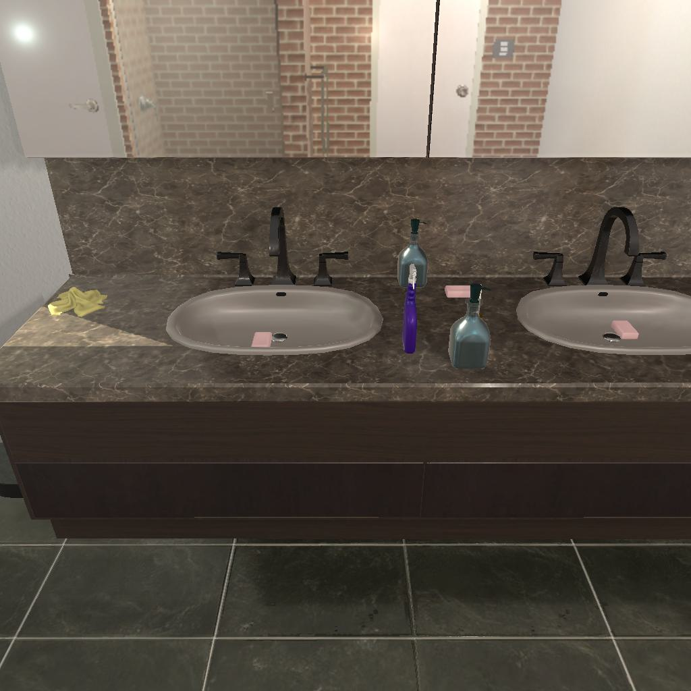

---------------------------------------------------------task: 27---------------------------------------------------------
--------------------------------------------------------------------------------------------------------------------------------------------------------------------
--------------------------------------------------------------------------------------------------------------------------------------------------------------------
Step:--------------------------------------------------------------------------3-------------------------------------------------------------------------------
----------------------------------------
VLM Prompt:
Image1:
Image2:
Image3:
**Instruction**
1. Analyze the provided images to identify all visible household objects and compare the difference between images (e.h. whether the object is opened or not and taken on hand or not), focusing on those relevant to the task description "find two soapbottle and put them in garbagecan."
2. Use the analysis of images and the task hint "The agent must find an object of the desired type, pick it up, find the correct location to place it, put it down there, then look for another object of the desired type, pick it up, return to previous location, and put it down there with the other object." to answer the question: what is the most reasonable action in the choices for the task description "find two soapbottle and put them in garbagecan"?
3. Decide and write the answer using the template: The answer is: (i): , where i is the real number. If there is no desired object in images, search every place based on **Initial Observation** to find the object. And if no one is exactly correct, choose a similar answer.
**Initial Observation**
You are in the middle of a room. Looking quickly around you, you can see countertop (1), sinkbasin (1-2), sink (1-2), garbagecan (1), drawer (1-2), toilet (1), handtowelholder (1)
**Answer Choices**
(1): go to sinkbasin 1
(2): go to sink 1
(3): go to garbagecan 1
(4): go to drawer 2
(5): go to sink 2
(6): go to sinkbasin 2
(7): go to toilet 1
(8): go to handtowelholder 1
(9): take faucet 2 from countertop 1
(10): take cloth 1 from countertop 1
(11): take soapbar 3 from countertop 1
(12): take soapbottle 2 from countertop 1
(13): examine countertop 1
**Answer**
Let's think step by step by following the instructions.
----------------------------------------
----------------------------------------
Original Response:
1. In Image1 and Image2, we can see two soap bottles on the countertop 1, one next to each sink basin. There is no visible difference between the two images regarding the soap bottles; they are not opened or taken in hand. Image3 focuses on one sink basin and shows one of the soap bottles next to it.
2. Based on the task description "find two soapbottle and put them in garbagecan," and the task hint provided, the agent must first pick up a soap bottle, then locate the garbage can and place the soap bottle there, and then repeat the process for the second soap bottle.
3. Using the template provided:
The answer is: (12): take soapbottle 2 from countertop 1.
Since the task is to find two soap bottles and we can see them on the countertop in the images, the most reasonable action is to take one of them and then proceed to find the garbage can to dispose of it as instructed.
----------------------------------------
----------------------------------------
>>> Refine Original VLM Response and Get Pure Action: take soapbottle 2 from countertop 1
----------------------------------------
-----------------------------------------------------------------
Running time: 11.383695125579834 seconds
Total Money: 16.870839999999994
-----------------------------------------------------------------
-----------------------------------------------------------------
Text Observation:You pick up the soapbottle 2 from the countertop 1.
-----------------------------------------------------------------
UNSUCCEED